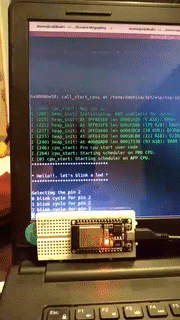

This post is part of a series of ESP32 blog posts. Look the index here
Motivation Link to heading
In the last blog of the series I wrote about freeRTOS tasks, and that the scheduler in FreeRTOS is designed to provide a predictable execution pattern. The Tasks allow to design better workflows for our applications, allowing to control memory allocation, and modularizing each task as separate entities which can run concurrently.
Blinking a led without using Tasks Link to heading
Programming embedded devices requires few extra steps than programming computers. Steps such as configuring clock rates, enabling or disabling internal features like the ADC (Analog to Digital Converter), DAC (Digital to Analog Converter), enabling certain pins as binary outputs or binary inputs, or even setting the clock speed of the device.
Amongst the configurable ESP32 features we can find,
- ADCs (analog-to-digital converter)
- DACs (digital-to-analog converter)
- I2C (Inter-Integrated Circuit)
- UART (universal asynchronous receiver/transmitter)
- CAN 2.0 (Controller Area Network)
- SPI (Serial Peripheral Interface)
- I2S (Integrated Inter-IC Sound)
- RMII (Reduced Media-Independent Interface)
- PWM (pulse width modulation)
- WiFi
- Bluetooth
- GPIO (General Purpose Input/Output) pins
In order to use each of the above elements, me must configure it properly.
It is really, really important to understand that embedded devices require
configuration of each feature and each individual pin to be involved in an
application. I recommend reading the API reference
to understand better the required functions and their corresponding header
libraries (the #include "<library>" statements).
To blink a led we need to cyclically change from a logic high to a logic low at a given GPIO pin.
The GPIO API states that we need to import “driver/gpio.h” in order to interact with GPIO pins. There we can read that the functions of interest are,
gpio_configconfigure a GPIO pin.gpio_set_directionto configure a GPIO pin as input or outputgpio_set_levelto set the logic level of a pin
To configure a GPIO pin we can either
- Declare a
gpio_config_tstruct and set each of its individual properties and then pass it by reference togpio_config. - Or user
gpio_set_directionto select a GPIO as input or output.
The method gpio_set_level sets the logic level on an output GPIO pin.
Reading the API from the espressif will give us details about the input parameters and return values of each of the aforementioned functions.
So, the proposed workflow is,
- Prompt and starting message
- Pick the output pin
- Set the desired pin as output
- Start a loop of 10 iterations
- Set the GPIO pin to high
- Wait for 500 ms
- Set the GPIO pin to low
- Wait for 500 ms
- Restart the device
The code that does this is,
#include <stdio.h>
#include "freertos/FreeRTOS.h"
#include "freertos/task.h"
#include "esp_system.h"
#include "driver/gpio.h"
#include "sdkconfig.h"
void app_main()
{
printf("******************************\n");
printf("* Hello!!, let's blink a led *\n");
printf("******************************\n\n");
// Set the output pin to the led's anode
uint32_t thePin = 0x2;
printf("Selecting the pin %d\n", thePin);
// Set the mode of the output pin
gpio_set_direction(thePin, GPIO_MODE_OUTPUT);
// Loop to blink the led
for (int i = 0; i < 10; i++) {
printf("%d blink cycle for pin %d\n", i, thePin);
gpio_set_level(thePin, 1);
vTaskDelay(500 / portTICK_PERIOD_MS);
gpio_set_level(thePin, 0);
vTaskDelay(500 / portTICK_PERIOD_MS);
}
// Restart the ESP32
printf("Restarting the chip now.\n");
fflush(stdout);
esp_restart();
}
Note that we used the vTaskDelay function whose signature is
void vTaskDelay(const TickType_t xTicksToDelay) and delays a task for a given
number of processor ticks. The actual time that the task remains blocked depends
on the tick rate. The constant portTICK_PERIOD_MS can be used to calculate
real time from the tick rate - with the resolution of one tick period, hence
if
$$ \text{Number Of Delayed Ticks} \times \text{One Tick Period in ms} = 500 , ms $$
We have that
$$ \text{Number Of Delayed Ticks} = \frac{500 , ms}{\text{One Tick Period in ms}} $$
So the proper signature is vTaskDelay(500 / portTICK_PERIOD_MS) since the
constant portTICK_PERIOD_MS stores the milliseconds taken for one tick
Once we run make followed by make flash, we can make monitor and obtain

But this is not very elegant, and we are underusing the freeRTOS task capabilities.
We can refactor the code above to look like the following,
#include <stdio.h>
#include "freertos/FreeRTOS.h"
#include "freertos/task.h"
#include "esp_system.h"
#include "driver/gpio.h"
#include "sdkconfig.h"
void blink_task(void* pvParameters) {
printf("[task] ******************************************\n");
printf("[task] * Hello Daniel, let's blink concurrently *\n");
printf("[task] ******************************************\n");
uint32_t thePin = 0x2;
printf("[task] Selecting the pin %d\n", thePin);
/*gpio_pad_select_gpio(thePin);*/
gpio_set_direction(thePin, GPIO_MODE_OUTPUT);
for (int i = 0; i < 10; i++) {
printf("[task] %d blink cycle for pin %d\n", i, thePin);
gpio_set_level(thePin, 1);
vTaskDelay(500 / portTICK_PERIOD_MS);
gpio_set_level(thePin, 0);
vTaskDelay(500 / portTICK_PERIOD_MS);
}
printf("[task] blink loop ended, deleting task...\n");
vTaskDelete(NULL);
}
void app_main()
{
printf("[main] Running the task in 3 seconds...\n");
vTaskDelay(3000 / portTICK_PERIOD_MS);
printf("[main] Running concurrent task now\n");
xTaskCreate(&blink_task, "blinking_led", 5*configMINIMAL_STACK_SIZE, NULL, 5, NULL);
printf("[main] The chip will restart in 20 seconds...\n");
vTaskDelay(20000 / portTICK_PERIOD_MS);
printf("[main] Restarting the chip now.\n");
fflush(stdout);
esp_restart();
}
Note several changes here,
- We isolated the blinking loop to a separate function called
blinking_taskwith signaturevoid blink_task(void* pvParameters) - At the end of the task we call
vTaskDelete(NULL) - Inside the
app_main()we create the task withxTaskCreateby passing the address ofblinking_taskto it, besides a string and a stack size - We delay both the begining of the task creation and the restar operation of the device
Yielding